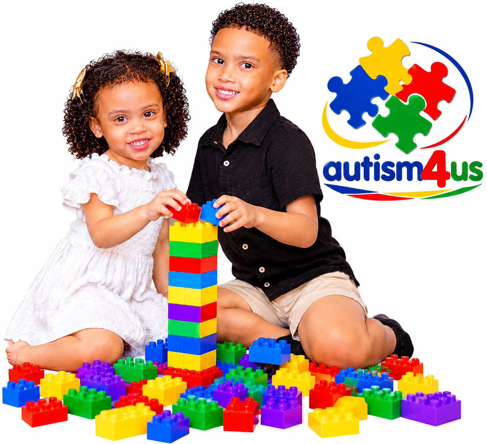

Welcome
Welcome to Autism4Us, a platform dedicated to providing valuable resources and support for individuals with autism and their families. These autism resources have been gathered on behalf of us (Rodwann & Robynn), the parents of Roma, to share information and support. Every autistic child is different, so please do your own research and choose the resources that best suit your child’s individual needs.
Helping people to understand autism, Autism4Us is a place for parents, caregivers, and anyone who wants to learn more. We gather helpful information, practical ideas, and support resources to help families explore what may work for their child.
Every autistic child is unique. What helps one child may not suit another, so use the resources as a starting point and do your own research to find what best fits your child’s needs. Explore Autism4Us to learn about autism, find family resources, and discover ideas for supporting children at home, at school, and in the community.
About
Autism4Us was created by parents who understand the challenges and joys of raising an autistic child. We know that every child and family is different, and that finding clear, helpful information can make a real difference.
Our mission is to make autism information easier to access and help families connect with useful resources. We share ideas and guidance for parents, caregivers, and anyone who wants to better understand and support autistic children.
We created this site to offer a welcoming place to learn, explore, and feel less alone. The resources here are gathered on behalf of parents and families, and are intended as a starting point. Every autistic child has their own strengths, needs, and experiences, so we encourage you to do your own research and choose what works best for your child and family.

Resources
Explore these resources from the Autistic Self Advocacy Network to hear autistic people’s perspectives and find plain-language information. The NHS autism support page also offers guidance for autistic people and their families.
For information about autism, development, and family resources, visit the CDC autism resource page. These websites are a starting point; services and recommendations can vary by location and by child, so please do your own research and speak with qualified local professionals when needed.
Explore resources from the Autism South Africa Resource Library, which includes information for parents, families, teens, and adults. Families in the Western Cape can also visit Autism Western Cape for local support, counselling, and educational resources.
For autistic people’s perspectives and plain-language resources, visit the Autistic Self Advocacy Network. The NHS autism support page and CDC autism resource page offer additional information. These sites are starting points; services and recommendations can vary by location and by child, so please do your own research and seek advice from qualified local professionals when needed.
Contact
If you have any questions or would like to get in touch with us, please reach out through our contact form or email us directly.